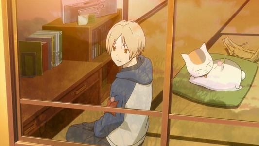

はじめまして、陶彦霖と申します。中南財経政法大学の三年生です。日本語を勉強しています。よろしくお願いします。 （嘻嘻，翻译如下） 初次见面，我是陶彦霖，中南财经政法大学三年级的学生。正在学习日语，还请多多关照！

学日语的初衷其实还是因为日漫啦。上了大学后时间比较充裕，于是就看了很多优秀的日漫。 其中最喜欢的就是夏目友人帐，喏，就是下面图中这位，是个很温柔的男孩子！于是呢，就想要是 自己也会一点点日语，或许看日漫不用字幕，那得多酷啊！（其实还是闲的），于是就报班开始学日语啦！

至于学习结果嘛，咳咳。我曾信心满满的报名了日语N2的考试，然而。。并没有通过。 害，不过没关系，我自认为从中学到了东西就好啦！虽然没拿到证，但是看动漫的时候能 听懂其中的些许句子就让我觉得很开心啦！
